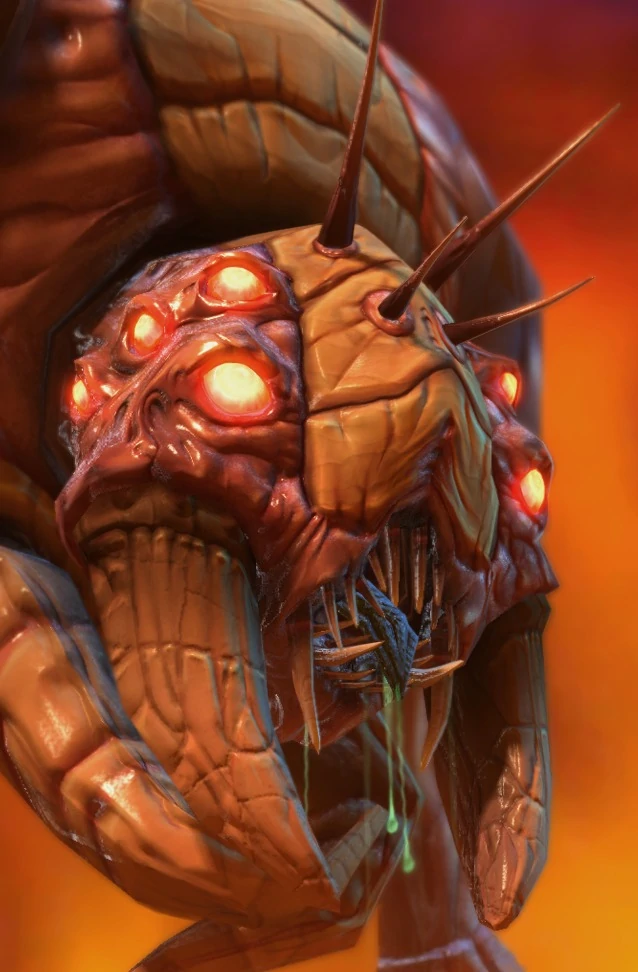

Надзиратель
| Надзиратель | |
|  | |
| Информация о юните | |
| Тип: | Воздушная единица |
| Описание: | Увеличивая максимальное количество доступных боевых единиц. Может мутировать в Надзирателя и во владыку с вентральными мешками |
| Требование: | Личинка |
| Стоимость: |  100 100  0 0  18 18  0 0 |
| Горячие клавиши: | V |
| Статистика юнита | |
| Защита: |  200 200  0 (+1) 0 (+1) |
| Атрибуты: | Биологическая единица Бронированный |
| Радиус обзора: | 11 |
| Скорость: | 0.902(+1.728) |
| Может мутировать в: | Владыка(Логово) Надзиратель с вентральными мешками(Логово) |
Обзор
Надзиратель — это генератор снабжения зергов, эквивалентный складу снабжения терранов и пилону протоссов. Надзиратель дает игроку за зергов 8 запасов. Необходимо построить больше, чтобы создать дополнительные единицы.
В StarCraft II Надзиратели не являются Детекторами, как их коллеги из Brood War. Вместо этого зерги превращают Надзирателей во Владкык для мобильного обнаружения. Владыкам требуется Логово.
Надзиратели могут быть размещены вокруг основной базы противника и естественной экспансии, предлагая информацию о том, когда они начали свою экспансию, и о составе их армии. Надзиратели и Владыки также являются полезными наблюдателями для размещения Червей Нидуса.
Хорошие игроки за зергов также знают, когда использовать Надзирателей для создания цепочки обзора. Когда угроза атаки с воздуха невелика, также рекомендуется размещать Надзирателей по карте в целом или позволить им патрулировать, обнаруживая первых вражеских рейдеров, воздушные десанты или толчки. Используйте высоту, чтобы скрыть Надзирателей от наземных юнитов. Крайне важно, чтобы игрок исследовал «Пневматизированный панцирь» для разведки вражеских баз и для быстрого побега.
Надзиратели также являются транспортной единицей зергов. Надзиратель может мутировать Вентральные мешки, которые в Legacy of the Void теперь являются улучшением. Мутирующие вентральные мешки изменяют внешний вид Надзирателя, показывая противнику, что он может нести юнитов. Вентральные мешки требуют логова. Надзиратели с вентральными мешками по-прежнему могут трансформироваться в обычных надзирателей, но они теряют способность загружать юнитов, а обновление можно выполнить только тогда, когда повелитель пуст. С вентральынми мешками каждый Надзиратель может перевозить 8 грузов.